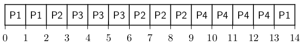
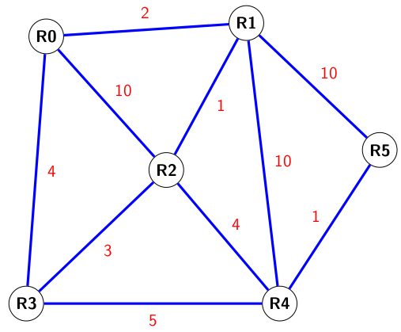

22-NSIJ1AS1 : Corrigé
Année : 2022
Centre : Amérique du sud
Jour : 1
Enoncé :
Exercice 1
bases de données
-
Une clé primaire doit être unique pour chaque enregistrement, donc :
id_merene peut pas servir de clé primaire pusiqu'une même femme peut avoir plusieurs enfants, par exemple dans l'extrait de table fourni, la mère d'idMere13861 apparaît deux fois.(date, rang)peut servir de clé primaire, en effet pour un jour donné, le rang de naissance est unique.(poids,taille)ne peut pas servir de clé primaire puisque deux bébés différents peuvent être nés avec le même poids et la même taille.
-
Une clé étrangère doit être toujours présente en tant que clé primaire dans la table qu'elle référence. Ici, la clé étrangère
idMeredoit donc être présente en tant que clé primaire dans la tablePatientes. La requêteproduit donc une erreur, car dans la tableDELETE FROM Patientes WHERE numPatiente = 13858;Naissances, un enregistrement ayant pouridMerela valeur13858existe.Note
De manière moins formelle, dans ce schéma de base de données, un bébé (enregistrement de
Naissances) à nécessairement une mère (enregistrement dePatientes). On ne peut donc pas supprimer un enregistrement dePatientesqui correspond à une naissance. -
INSERT INTO Patientes VALUES(13862,"Bélanger","Ninette","La Rochelle"); -
UPDATE Naissances SET prenom = "Laurette" WHERE date = "01/03/2022" and rang = 1;Note
On modifie le prénom en sélectionnant le bébé par sa date et son rang de naissance (qui peut servir de clé primaire d'après la question 1).
-
SELECT nom,prenoms FROM Patientes WHERE commune = "Aigrefeuille d'Aunis" -
SELECT AVG(poids) FROM Naissances JOIN TypesAccouchement ON TypesAccouchement.idAcc = Naissances.acc WHERE TypesAccouchement.libelleAcc = "césarienne" -
Cette requête renvoie :
| nom | prenom |
|---|---|
| Berthelot | Michelle |
| Samson | Marine |
| Baugé | Gaëlle |
C'est à dire les noms et prénoms des patientes ayant eu un accouchement de type 1.
Exercice 2
programmation et algorithmes de tri
Note
Un patient p est représenté par un tuple contenant son identifiant et son ordre de priorité. Donc p[0] est l'identifiant et p[1] la priorité.
-
attente.append((50,4)) -
a. C'est le tri par sélection (à chaque passage dans la boucle
for i in range(len(attente)on recherche le patient le plus prioritaire à partir du ième et on le place en positioni)Bug
la fonction
trimodifie en place la listeattentemais ne renvoie rien contrairement à ce qui est indiqué dans l'énoncéb. La complexité en temps des tris par insertion et par sélection est quadratique : \(\mathcal{O}(n^2)\).
-
a.
def quitte(attente): return [patient from attente if patient[1]!=1]b.
def maj(attente): return [(patient[0],patient[1]-1) for patient in attente] -
a.
def priorite(attente,p): for patient in attente: if patient[0]==p: return patient[1]b.
23 24 25 26 27 28 29 30 31 32 33
def revise(attente,p): nouvelle = [] n = priorite(attente,p) for (patient,prio) in attente: if patient == p : nouvelle.append((patient,1)) elif prio < n: nouvelle.append((patient,prio+1)) else: nouvelle.append((patient,prio)) return nouvelle
Exercice 3
arbres binaires
Attention
- L'implémentation des arbres binaires sous forme de dictionnaire telle que donné dans l'énoncé est inhabituelle.
- La fonction de parcours produit un affichage à l'aide d'instructions
printmais ne renvoie rien.
-
On rappelle que la taille est le nombre de noeuds et la hauteur le nombre maximal de noeuds d'une branche. Dans le cas de l'arbre donné en introduction, la taille est donc 11 et la hauteur 5.
-
a. Cette structure correspond à l'arbre 2. En effet, le noeud
dest le sous arbre droit debet le noeudgest le sous arbre gauche def.b.
graph TD H["H"] --> G["G"] H --> F["F"] G --> E["E"] G --> D["D"] D --- V1[" "] D --> B["B"] F --> C["C"] F --- V2[" "] C --- V3[" "] C --> A["A"] style V1 fill:#FFFFFF, stroke:#FFFFFF style V2 fill:#FFFFFF, stroke:#FFFFFF style V3 fill:#FFFFFF, stroke:#FFFFFF linkStyle 4 stroke:#FFFFFF,stroke-width:0px linkStyle 7 stroke:#FFFFFF,stroke-width:0px linkStyle 8 stroke:#FFFFFF,stroke-width:0px -
a. L'affichage obtenu sera :
d, b, g, f, a(on reconnaît un parcours en profondeur suffixé c'est à dire qu'on liste les noeuds du sous arbre gauche et du sous arbre droit avant la racine)b. On reprend la fonction
parcoursdonnée dans l'énoncé, et on n'affiche l'étiquette seulement si le noeud est une feuille c'est à dire lorsquearb['sag']etarb['sad']sont l'arbre vide.1 2 3 4 5 6 7
def parcours(arb): if arb == {}: return None parcours(arb['sag']) parcours(arb['sad']) if arb['sag'] == {} and arb['sad'] == {}: print(arb['etiquette']) -
1 2 3 4 5 6 7 8 9 10 11 12 13 14 15 16 17 18 19
def symptomes(arb,mal): if arb['sag'] != {}: symptomes(arb['sag'],mal) if arb['sad'] != {}: symptomes(arb['sad'],mal) if arb['etiquette']==mal: arb['surChemin'] = True print('symptômes de', arb['etiquette'], ':') else: if arb['sad'] != {} and arb['sad']['surChemin'] : print(arb['etiquette']) arb['surChemin'] = True if arb['sag'] != {} and arb['sag']['surChemin'] : print('pas de', arb['etiquette'] ) arb['surChemin'] = True
Exercice 4
gestion des processus et des ressources par un système d'exploitation
Partie A : Ordonnancement des processus
-

-
Processus Temps d'exécution Instant d'arrivée Temps de séjour Temps d'attente P1 \(3\) \(0\) \(14-0=14\) \(14 - 3 = 11\) P2 \(4\) \(2\) \(9-2=7\) \(7 - 4 = 3\) P3 \(3\) \(3\) \(6-3=3\) \(3 - 3 = 0\) P4 \(4\) \(5\) \(13-5=8\) \(8 - 4 = 4\) -
Le temps d'attente d'un processus est nul lorsque le temps de séjour est égal au temps d'exécution. C'est à dire lorsque le processus était le plus prioritaire durant la totalité de son temps d'exécution.
Partie B : Processus et ressources
-
D'après le tableau on constate que :
- l'analyseur d'échantillon attend la donnée D4 qu'il ne peut obtenir car elle est mobilisée par le sgbd.
- le sgbd attend la donnée D5 qu'il ne peut obtenir car elle est mobilisée par la tableur.
- le tableur attend la donnée D1 qu'il ne peut obtenir car elle est mobilisée par l'analyseur d'échantillon.
-
C'est une situation d'interblocage ou deadlock en anglais.
-
Si D1 est libérée, alors le tableur peut s'exécuter, il libérera alors D3 ce qui permet l’exécution du sgbd et D5 qui permet l'exécution du traitement de texte. Un ordre possible d'exécution des processus est donc : tableur > sgbd > traitement de texte > analyseur d'échantillon.
Exercice 5
réseaux et protocoles de routage
Partie A : Adressage
-
L'adresse du service de radiologie est
192.168.1.0/24c'est à dire que l'adresse du réseau est192.168.1.0et le masque255.255.255.0 -
Les adresses des trois interfaces du routeur R5 sont :
172.89.50.0/2444.197.5.0/24192.168.5.0/24
-
a. La première adresse pouvant être attribuée à une machine sur le réseau RL R est
192.168.1.1et la dernière192.168.1.254.b. Un maximum de 254 machines peuvent donc être connectées sur ce réseau.
Partie B : Etude du protocole RIP
- Les routeurs parcourus seront
R5R1R0 - En cas de panne du routeur
R1, une nouvelle route sera :R5R4R2R0
Partie B : Etude du protocole OSPF
Bug
L'exemple de calcul du coût donné dans l'énoncé ne correspond pas aux valeurs des tableaux. Entre R0 et R3, le coût devrait être calculé avec \(\dfrac{10^9}{300\times10^6} \simeq 3,33\) et l'entier immédiatement supérieur est 4.
L'exemple donné semble correspondre au calcul du coût entre R1 et R2.
-
Le coût de la liaison entre
R2etR3est : \(\dfrac{10^9}{400\times10^6}=2,5\). Le coût est l'entier immédiatement supérieur donc 3. -
Une bande passante possible de la connexion entre
R3etR4est \(200\) MB/s, en effet le coût sera alors \(\dfrac{10^9}{200\times10^6}=5\). -
On a reproduit le graphe du réseau ci-dessous en faisant figurer les coûts des liaisons :  Le chemin parcouru sera donc
R0R1R2R4R5et le coût total de ce chemin est \(2+1+4+1=8\). -
En cas de panne du routeur
R1, la nouvelle route sera :R0R3R4R5et le coût total sera : \(4+5+1=10\)